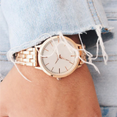
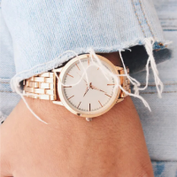

Як правильно обрати ліжко?
При виборі ліжка в інтернет магазині Вам в першу чергу потрібно вибрати матеріал. Найбільшою популярністю користуються дерев'яні ліжка, виготовлені з вільхи, ясена чи дуба. Такі моделі чудово прикрасять Вашу спальню у квартирі чи приватному будинку. Для орендованих квартир, під здачу, більше підійде ліжко з металу, так як воно просто «не вбивається», а також має дуже демократичну ціну.
Для Вашої зручності ліжко може комплектуватись висувними ящиками або підйомним механізмом. Ящики можуть бути з одного боку ліжка або з двох. Також є моделі, з висувними ящиками спереду. Ліжка з підйомним механізмом, це відмінне рішення, для невеликих кімнат, вони дозволяють заощадити простір і мають велику нішу для зберігання постільної білизни. Всі дерев'яні ліжка комплектуються буковими ламелями. Спальне місце з ламельною основою може витримувати навантаження до 150 кг на одне спальне місце. Відстань між ламелями, у своїй має бути 2,5-3 див. Кожне ліжко може бути забарвлене у різні кольори: чорні, білі, сірі, венге, у кольорі горіх. Завдяки цьому ліжко можна підібрати під будь-який інтер'єр.
Оформлення вітальні. Які м'які меблі краще вибрати?

Вітальня – це основна кімната у кожному будинку. Саме вона служить для прийому гостей, проведення часу всією сім'єю та просто для відпочинку у приємній теплій атмосфері. Оформляючи свій будинок та вітальню зокрема, всі намагаються зробити її максимально зручною, комфортною та красивою. Основним та центральним елементом оформлення вітальні, як і будь-якої іншої кімнати, є м'які меблі.
Будь-які меблі для вітальні повинні бути не тільки стильними і красивими, але і функціональними. На таких меблів має бути зручно та приємно відпочивати та приймати гостей. Однак сьогодні існує величезна різноманітність найрізноманітніших м'яких меблів для вітальні, яка підходить для кімнат різних розмірів і форм. На чому варто зупинити свій вибір? Як краще оформити свою вітальню, щоб вам було комфортно, а гості хотіли приходити до вас знову та знову?
На сайті інтернет магазину Кровато представлено велику різноманітність м'яких меблів для вітальні, серед яких кожен зможе вибрати для себе найбільш вдалий варіант. У нас ви знайдете:
- Прямі дивани. Такі дивани вважаються класикою. Вони підходять для віталень будь-яких форм та розмірів. Прямий диван виглядає стильно та лаконічно, на ньому зручно відпочивати, приймати гостей або навіть спати. Прямі дивани можуть стояти біля стіни, так і в центрі кімнати. Багато моделей прямих диванів легко розкладаються, перетворюючись на повноцінне спальне місце. Також більшість диванів мають великі та місткі ніші, які є додатковим місцем для зберігання;
- Кутові дивани Кутові дивани вважаються найзручнішими та комфортнішими. Вони ідеально підійдуть для приємного проведення часу в колі сім'ї або друзів. Кутові дивани в основному використовуються для оформлення великих віталень, так як вони займають багато місця, і для кімнат з невеликою площею просто не підійдуть;
- Тахти. Тахта - це одна з варіацій дивана, але стильніша і мінімалістична. Виглядають тахти дуже незвично і можуть підійти для будь-якого інтер'єру. Також тахти більше ніж звичайні дивани підходять для сну, оскільки в їх основі не пружинні блоки, а дерев'яні ламелі або ортопедичні матраци;
- Крісла. Крісло – це особливий предмет інтер'єру. Сучасні дизайнери не часто використовують його, вважаючи застарілим, проте саме крісла створюють особливий затишок та комфорт у будь-якій кімнаті. Сьогодні існує величезна різноманітність класичних та сучасних моделей крісел, що дозволяє кожному відшукати ідеальне крісло для свого будинку;
- Набір меблів. Комплект м'яких меблів – це відмінне рішення для тих, хто хоче меблювати свою вітальню не лише диваном, а й кріслами. Існують набори з одним або двома кріслами, із прямими або кутовими диванами. Основна перевага будь-якого готового меблевого гарнітура – це те, що предмети меблів у ньому ідеально поєднуються один з одним, і вам не потрібно буде витрачати свій час та сили на їхній підбір.
Підбір м'яких меблів для вітальні – це заняття непросте. Однак при виборі та покупці меблів для своєї вітальні пам'ятайте, що якісні м'які меблі повинні бути не тільки красивими, але й зручними для вас і всіх мешканців вашого будинку.
KROVATO це

Власне виробництво
Також у нас є своє виробництво, завдяки чому ми можемо виготовити меблі безпосередньо за Вашими побажаннями: нестандартний розмір, висота, виготовлення меблів за Вашим ескізом. Ліжка, тумби, комоди, шафи - все це ми можемо доопрацювати за Вашим бажанням.
Професіонали
Наші вироби виготовлені на професійному обладнанні з ясена, вільхи, бука, дуба, металу та ДСП. Фабрики із закритим циклом виробництва – контроль якості кожному етапі: від завезення дерева в цех до складання ліжка в клієнта.
Великий вибір
На нашому сайті Ви легко зможете підібрати собі спальню, вітальню або дитячу кімнату "під ключ". Величезний вибір матраців, ліжок, а також тумбочок та комодів чекають на Вас.
Контроль якості
Наші досвідчені менеджери, з радістю допоможуть підібрати Вам меблі, які Вас радуватимуть довгі роки. Завдяки власній службі доставки та збирання, ми підтримуємо контроль якості від виробництва до клієнта.
Follow products and discounts on Instagram


 

Collections
you can explore ans shop many differnt collection from various barands here.

Explore exciting subjects, & play your way to brilliance
Why settle for ordinary when you can explore the extraordinary? Join us and discover why EduPlay is not just the best – it's the magical key to unlocking creativity for your kids.
About me
Welcome to the cinematic realm of Jimmy, where creativity meets technology to craft visually stunning narratives. With a passion for storytelling and a keen eye for detail, I embark on a journey to transform ordinary footage into extraordinary visual experiences.
Cash cow editing
Reels editngg
logo animation
podcast edit
I am ready to consult you
+92 455 478 112
defense phase 3, lahore pakistan
videoeditor@gmail.com